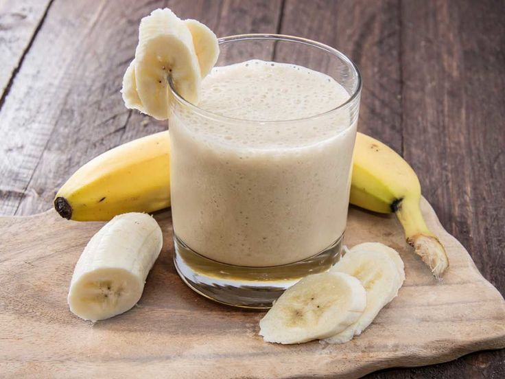

Banana Smoothie

← Back to Recipes
Description
This creamy and naturally sweet banana smoothie makes a quick, wholesome breakfast or an energizing afternoon treat.
Made with just a few pantry staples, it blends into a thick, refreshing beverage in under five minutes.
Ingredients
- 3 ripe bananas (preferably frozen for extra thickness)
- 1 cup milk (dairy, almond, or oat)
- ½ cup plain or vanilla Greek yogurt
- 1 tablespoon honey or maple syrup
- ½ cup ice cubes
- ½ teaspoon vanilla extract (optional)
Steps
- Peel the bananas and slice them into chunks.
- Add the banana slices, milk, Greek yogurt, honey, vanilla extract, and ice cubes into a blender.
- Cover and blend on high speed for 30 to 60 seconds until completely smooth and creamy.
- Pour into a tall glass and garnish with an extra slice of banana if desired.
Enjoy your smoothie!
← Back to Recipes